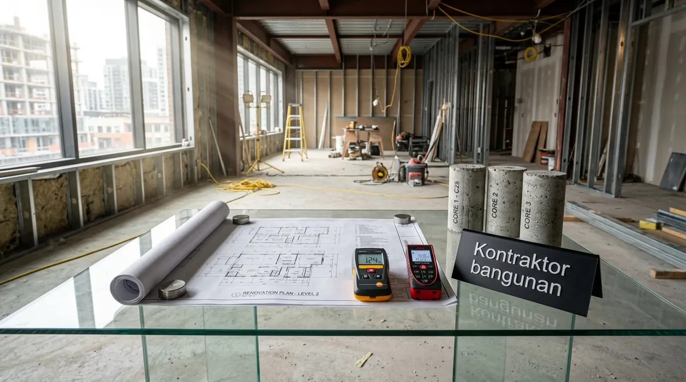

Bagaimana Cara Suntik Pondasi untuk Tambah Lantai Tanpa Merusak Rumah Lama?
Suntik pondasi dilakukan dengan menggali titik-titik kolom sudut, memasang pondasi telapak cakar ayam sedalam 1,5–2 meter, dan mengikatnya dengan balok kolom praktis baru.
Proses perkuatan struktur eksisting dilakukan secara presisi oleh tim teknis Kontraktor Bangunan dengan tahapan:
- Identifikasi Titik Beban Kritis: Menentukan 6 hingga 12 titik tumpuan kolom utama di lantai 1 yang akan menopang balok lantai 2.
- Pembongkaran Keramik Lokal (Ukuran 1x1 meter): Lantai hanya dibongkar pada titik pondasi saja, sehingga ruangan lain di lantai dasar tetap terlindungi.
- Pengecoran Pondasi Cakar Ayam & Kolom Pedestal: Perakitan besi ulir SNI dia 12-16 mm dan pengecoran beton mutu K-250 dengan aditif pengeras cepat.
- Penyambungan (Chemical Anchoring): Pemasangan angkur besi kimia untuk mengikat kolom baru ke struktur sloof lama secara monolitik.
Rincian Estimasi Biaya Renovasi Rumah 2 Lantai di Surabaya
Komponen biaya renovasi 2 lantai terbagi atas pekerjaan pembongkaran atap lama, perkuatan pondasi, dak beton, pasangan dinding bata ringan, atap baru, dan finishing.
Berdasarkan Analisa Harga Satuan Pekerjaan (AHSP) Surabaya 2026, berikut simulasi biaya untuk penambahan luas lantai 2 seluas 60 m²:
1. Pekerjaan Pembongkaran & Pembersihan
Pembongkaran atap lama, rangka plafon, dan pembersihan puing: Rp4.500.000 – Rp8.000.000
2. Pekerjaan Suntik Pondasi & Kolom Struktur
Pembuatan 8 titik pondasi cakar ayam + balok sloof & kolom beton K-250: Rp28.000.000 – Rp42.000.000
3. Pekerjaan Plat Dak Lantai 2 (Bondek + Cor K-250)
Plat dak bondek 0.75mm + wiremesh M8 + cor ready mix tebal 12 cm: Rp38.000.000 – Rp52.000.000
4. Pasangan Dinding Bata Ringan & Plester Aci
Dinding hebel 10 cm + mortar instan + plester acian anti-retak: Rp25.000.000 – Rp36.000.000
5. Atap Baja Ringan & Plafon Gypsum
Rangka baja ringan C75.75 SNI + genteng flat metal/keramik + plafon gypsum: Rp24.000.000 – Rp35.000.000
6. Finishing Lantai, Kusen & Pengecatan
Granit tile 60x60, kusen aluminium 3 inci, cat dinding, dan MEP: Rp35.000.000 – Rp50.000.000
Estimasi Total Biaya (Luas 60 m²): Rp154.500.000 – Rp223.000.000 (Rata-rata: Rp2.600.000 – Rp3.700.000/m² untuk lantai atas saja).

Proses pengecoran plat lantai dak beton sistem bondek yang cepat, rapi, dan kokoh.
Tabel Komparasi Sistem Dak Lantai 2 di Surabaya
Tabel komparasi menguraikan perbandingan teknis antara Dak Cor Konvensional Bekisting Kayu, Dak Bondek Plat Baja, dan Dak Keraton Komposit.
| Parameter Evaluasi | Dak Cor Konvensional (Kayu) | Dak Bondek Plat Baja (Metal Deck) | Dak Keraton (Keramik Komposit) |
|---|---|---|---|
| Estimasi Biaya / m² | Rp850.000 – Rp1.050.000 | Rp950.000 – Rp1.250.000 | Rp750.000 – Rp980.000 |
| Kecepatan Pengerjaan | Lambat (Perlu Bongkar Bekisting) | Sangat Cepat (Tanpa Lepas Plat) | Cepat (Sistem Rakit Modul) |
| Beban Bobot Struktur | Sangat Berat (~280 kg/m²) | Sedang (~220 kg/m²) | Sangat Ringan (~160 kg/m²) |
| Kebutuhan Tiang Perancah | Banyak (Mengisi Ruang Bawah) | Sedikit (Penyangga Balok Saja) | Sangat Sedikit / Bebas Kolong |
| Kerapian Kolong Bawah | Perlu Diplester Ulang | Bagian Bawah Rapi Plat Baja | Permukaan Rata Keramik |
| Rekomendasi Kontraktor | Proyek Bangun Baru | Sangat Direkomendasikan Renovasi | Bagus untuk Akses Sempit Gang |
- Buat Void Tangga Ber-Skylight: Area tangga adalah media terbaik mengalirkan cahaya matahari dan sirkulasi angin segar dari lantai atas ke ruang keluarga lantai 1.
- Hindari Menempatkan Kamar Mandi di Atas Ruang Tamu: Usahakan posisi toilet lantai 2 berada persis di atas toilet lantai 1 agar jalur pipa air kotor dan pembuangan tidak berbelok-belok.
- Pilih Insulasi Atap Aluminium Foil Ganda: Karena lantai atas menyerap panas atap secara langsung di siang hari Surabaya yang terik, pasang peredam panas woven double foil di bawah genteng.
Pertanyaan yang Sering Diajukan (FAQ)
Kesimpulan Praktis
Menambah lantai 2 adalah investasi properti terbaik untuk melipatgandakan luas ruang hunian Anda di Surabaya tanpa perlu membeli tanah baru yang mahal. Konsultasikan bersama ahli struktur kami.